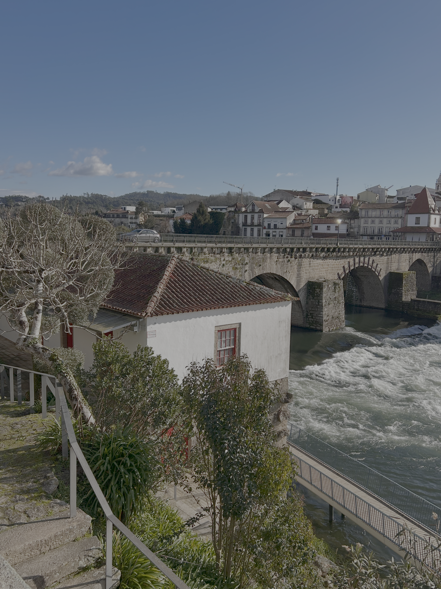
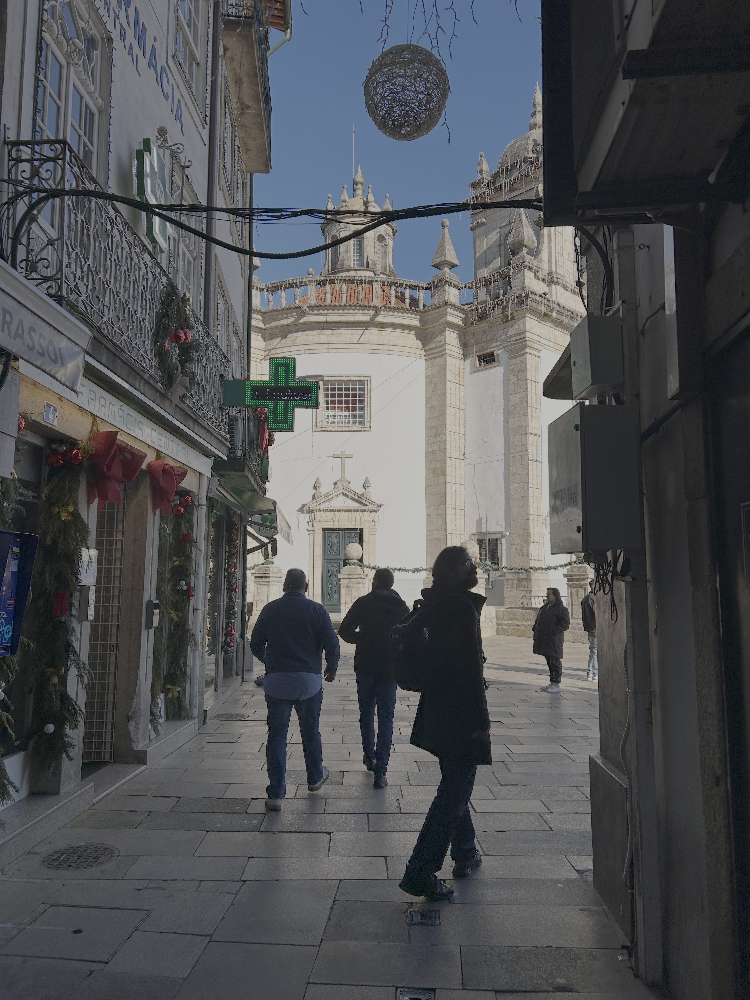

A Vida Pacata
Date: 19/03/2026 11:55:03
I learned a new word in Portuguese — “pacata”. People use it to describe the way of life (“a vida pacata” — a calm fulfilling life), or a place (“a cidade pacata” — a tranquil kind of town city where you have everything you need), and both would perfectly describe my life and where I live at this point.
I haven’t written anything for such a long time, but let’s just restart. I guess I got very involved with establishing this new, refreshing way of life!

So I got a new job in August, and in November, I moved to Barcelos — a town in Minho, about an hour north of Porto by train or car.
Now, my life consists of working from home, going to weekly markets, to regular gym sessions, to the park with our dog, cooking tasty meals, playing video games, and reading books while half-drowning in a beanbag.
My partner and I are still establishing our social life here, but having a dog, it’s not that difficult to meet someone. Plus, I have some new good acquaintances from my belly dance class.
Let this new post be a sign for me to finish an article about why we moved to Barcelos and how we chose the town.
